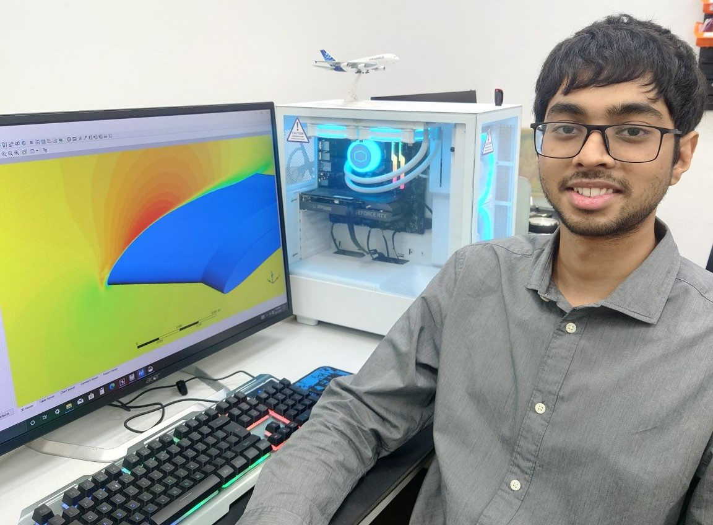
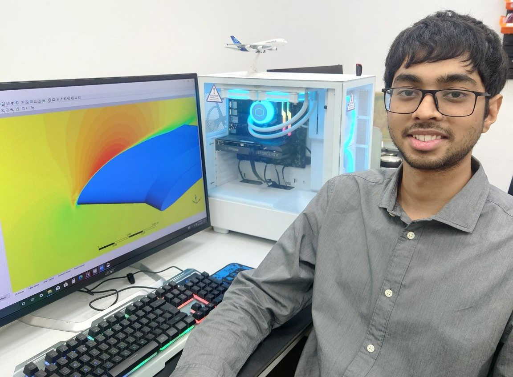

Important: Due to my NDA agreement, I have only included publicly available images and non-confidential details in this page.
My work during the internship in CFD included analysis of the UAV planforms through CFD in different conditions and with different external components (like landing gear, pitot sensor and different types of wing tips) to quantify the performance difference due to those components. Apart from this, I started work on propeller analysis which was later continued during my full-time work at the same organization.
I introduced basic levels of automations through Parametric designs and simulations which improved speed by 20-30%.
I also worked on design of components of a quadcopter. This is where I got experience with design for prototyping and design for Manufacturing and Assembly. Components included mounts for UAV arms, Motor mounts, and many more.
Detailed information about my work in this organization is in the Full-time page.